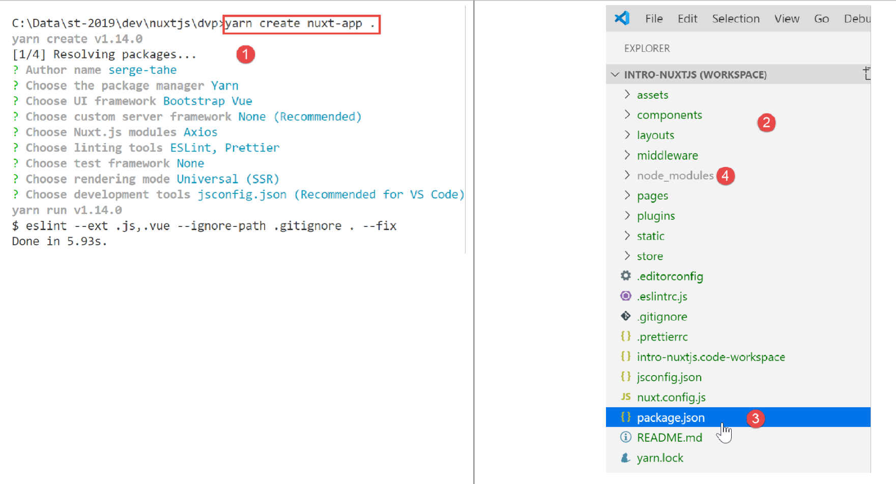
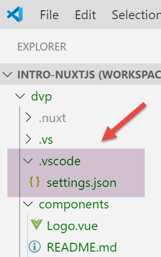
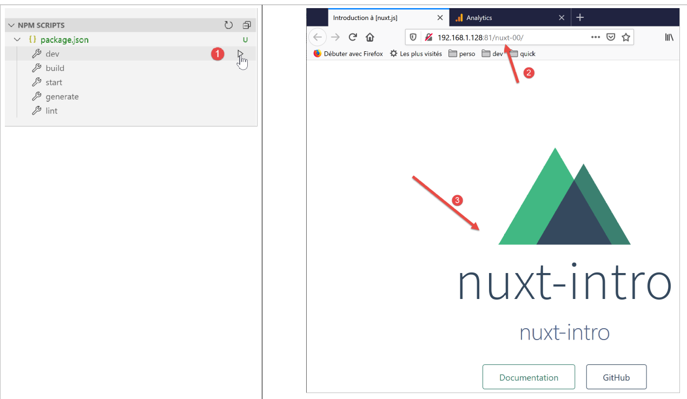
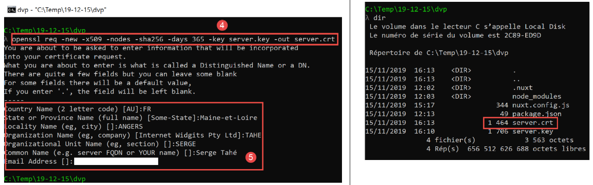

3. تطبيق أول لـ [nuxt.js]
3.1. إنشاء التطبيق
بالنسبة لتطويراتنا [nuxt.js]، سنستمر في استخدام VS Code. قمنا بإنشاء مجلد [dvp] فارغ سنضع فيه أمثلةنا. ثم نفتح هذا المجلد:

نحفظ مساحة العمل تحت اسم [intro-nuxtjs] [3-5]:

نفتح محطة طرفية [6-7]:

حتى الآن، استخدمنا مدير حزم جافا سكريبت [npm]. للتغيير، سنستخدم هنا المدير [yarn]. يتم تثبيت هذا المدير، مثل [npm]، مع الإصدارات الحديثة من [node.js]. لإنشاء أول تطبيق [nuxt]، نستخدم الأمر [yarn create nuxt-app <dossier>] [1]. سيطلب الأمر عددًا معينًا من المعلومات حول المشروع المراد إنشاؤه، ثم بعد الحصول على هذه المعلومات، سيقوم بإنشائه [2]:

في [2]، تم إنشاء شجرة كاملة من الملفات. يقدم الملف [package.json] قائمة بمكتبات جافا سكريبت التي تم تنزيلها في المجلد [node-modules] [4]:
{
"name": "nuxt-intro",
"version": "1.0.0",
"description": "nuxt-intro",
"author": "serge-tahe",
"private": true,
"scripts": {
"dev": "nuxt",
"build": "nuxt build",
"start": "nuxt start",
"generate": "nuxt generate",
"lint": "eslint --ext .js,.vue --ignore-path .gitignore ."
},
"dependencies": {
"nuxt": "^2.0.0",
"bootstrap-vue": "^2.0.0",
"bootstrap": "^4.1.3",
"@nuxtjs/axios": "^5.3.6"
},
"devDependencies": {
"@nuxtjs/eslint-config": "^1.0.1",
"@nuxtjs/eslint-module": "^1.0.0",
"babel-eslint": "^10.0.1",
"eslint": "^6.1.0",
"eslint-plugin-nuxt": ">=0.4.2",
"eslint-config-prettier": "^4.1.0",
"eslint-plugin-prettier": "^3.0.1",
"prettier": "^1.16.4"
}
}
يعكس هذا الملف الإجابات التي تم تقديمها للأمر [create nuxt-app] لتعريف المشروع الذي تم إنشاؤه (نوفمبر 2019). قد يكون لدى القارئ ملف [package.json] مختلف:
- فقد يكون قد قدم إجابات مختلفة على الأسئلة؛
- قد يكون الأمر [create nuxt-app] قد تطور منذ كتابة هذا المستند: فقد تتغير التبعيات والإصدارات؛
السطر 8 من البرنامج النصي هو الأمر الذي يطلق التطبيق:

- في [4]، نرى أن التطبيق متاح في URL [localhost:3000]؛
- في [5-6]، نرى أن التطبيق ينشئ خادمًا [6] وعميلًا (لهذا الخادم) [5]؛
لنطلب URL [http://localhost:3000/] في متصفح:

3.2. وصف شجرة تطبيق [nuxt]
لنستعرض شجرة التطبيق الذي تم إنشاؤه:

دور المجلدات هو كما يلي:
assets | الموارد غير المُجمَّعة للتطبيق (الصور، ...)؛ |
static | ستكون ملفات هذا المجلد متاحة في جذر التطبيق. نضع في هذا المجلد الملفات التي يجب أن توجد في جذر التطبيق، مثل الملف [robots.txt] المخصص لمحركات البحث؛ |
components | مكونات التطبيق [vue] المستخدمة في [layouts] و [pages]؛ |
التخطيطات | مكونات [vue] للتطبيق المستخدمة في تخطيط [pages]؛ |
الصفحات | مكونات [vue] التي تعرضها المسارات المختلفة للتطبيق. يمكن تسميتها بعروض التطبيق. تلعب الصفحات دورًا خاصًا في [nuxt]: يتم إنشاء المسارات ديناميكيًا من الشجرة الموجودة في المجلد [pages]؛ |
البرمجيات الوسيطة | النصوص البرمجية التي يتم تنفيذها عند كل تغيير في المسار. وهي تسمح بالتحكم في هذه المسارات؛ |
المكونات الإضافية | يحمل اسمًا قد يسبب بعض الالتباس. قد يحتوي على مكونات إضافية، ولكنه قد يحتوي أيضًا على نصوص برمجية تقليدية. يتم تنفيذ النصوص البرمجية الموجودة في هذا المجلد عند بدء تشغيل التطبيق؛ |
store | إذا كان يحتوي على نص برمجي [index.js]، فإنه يحدد مثيلًا لمخزن [Vuex]؛ |
إذا كان المجلد فارغًا، فيمكن حذفه من شجرة المجلدات. في المثال أعلاه، يمكن حذف المجلدات [assets, static, middleware, plugins, store] و [2].
3.3. ملف التكوين [nuxt.config]
يتم التحكم في تشغيل التطبيق بواسطة ملف [nuxt.config.js] التالي:
export default {
mode: 'universal',
/*
** Headers of the page
*/
head: {
title: process.env.npm_package_name || '',
meta: [
{ charset: 'utf-8' },
{ name: 'viewport', content: 'width=device-width, initial-scale=1' },
{
hid: 'description',
name: 'description',
content: process.env.npm_package_description || ''
}
],
link: [{ rel: 'icon', type: 'image/x-icon', href: '/favicon.ico' }]
},
/*
** Customize the progress-bar color
*/
loading: { color: '#fff' },
/*
** Global CSS
*/
css: [],
/*
** Plugins to load before mounting the App
*/
plugins: [],
/*
** Nuxt.js dev-modules
*/
buildModules: [
// الوثيقة: https://github.com/nuxt-community/eslint-module
'@nuxtjs/eslint-module'
],
/*
** Nuxt.js modules
*/
modules: [
// الوثيقة: https://bootstrap-vue.js.org
'bootstrap-vue/nuxt',
// الوثيقة: https://axios.nuxtjs.org/usage
'@nuxtjs/axios'
],
/*
** Axios module configuration
** See https://axios.nuxtjs.org/options
*/
axios: {},
/*
** Build configuration
*/
build: {
/*
** You can extend webpack config here
*/
extend(config, ctx) {}
}
}
- السطر 2: نوع التطبيق الذي تم إنشاؤه:
- [universal]: تطبيق عميل/خادم. عند التحميل الأولي للتطبيق وكذلك عند كل تحديث للصفحة في المتصفح، يُطلب من الخادم تقديم الصفحة؛
- [sap]: تطبيق من النوع [Single Page Application]: يقوم الخادم في البداية بتسليم التطبيق بالكامل. بعد ذلك يعمل العميل بمفرده، حتى في حالة تحديث الصفحة في المتصفح؛
- الأسطر 6-18: تحدد رأس الصفحة HTML <head> لمختلف صفحات التطبيق:
- السطر 7: العلامة <title> لعنوان الصفحات؛
- الأسطر 8-16: العلامات <meta>؛
- السطر 17: العلامات <link>
في التطبيق الذي تم إنشاؤه، تكون علامة <head> كما يلي (كود مصدر الصفحة المعروضة في المتصفح):
<title>nuxt-intro</title>
<meta data-n-head="ssr" charset="utf-8">
<meta data-n-head="ssr" name="viewport" content="width=device-width, initial-scale=1">
<meta data-n-head="ssr" data-hid="description" name="description" content="nuxt-intro">
<link data-n-head="ssr" rel="icon" type="image/x-icon" href="/favicon.ico">
<link rel="preload" href="/_nuxt/runtime.js" as="script">
<link rel="preload" href="/_nuxt/commons.app.js" as="script">
<link rel="preload" href="/_nuxt/vendors.app.js" as="script">
<link rel="preload" href="/_nuxt/app.js" as="script">
الآن، لنقوم بتعديل الملف [nuxt.config] على النحو التالي:
head: {
title: 'Introduction à [nuxt.js]',
meta: [
{ charset: 'utf-8' },
{ name: 'viewport', content: 'width=device-width, initial-scale=1' },
{
hid: 'description',
name: 'description',
content: 'ssr routing loading asyncdata middleware plugins store'
}
],
link: [{ rel: 'icon', type: 'image/x-icon', href: '/favicon.ico' }]
},
عندما نعيد تشغيل التطبيق، تصبح علامة <head> كما يلي (كود مصدر الصفحة المعروضة في المتصفح):
<head >
<title>Introduction à [nuxt.js]</title>
<meta data-n-head="ssr" charset="utf-8">
<meta data-n-head="ssr" name="viewport" content="width=device-width, initial-scale=1">
<meta data-n-head="ssr" data-hid="description" name="description" content="ssr routing loading asyncdata middleware plugins store">
<link data-n-head="ssr" rel="icon" type="image/x-icon" href="/favicon.ico">
<link rel="preload" href="/_nuxt/runtime.js" as="script">
<link rel="preload" href="/_nuxt/commons.app.js" as="script">
<link rel="preload" href="/_nuxt/vendors.app.js" as="script">
<link rel="preload" href="/_nuxt/app.js" as="script">
لنعد إلى الملف [nuxt.config]:
export default {
mode: 'universal',
/*
** Headers of the page
*/
head: {
...
},
/*
** Customize the progress-bar color
*/
loading: { color: '#fff' },
/*
** Global CSS
*/
css: [],
/*
** Plugins to load before mounting the App
*/
plugins: [],
/*
** Nuxt.js dev-modules
*/
buildModules: [
// الوثيقة: https://github.com/nuxt-community/eslint-module
'@nuxtjs/eslint-module'
],
/*
** Nuxt.js modules
*/
modules: [
// الوثيقة: https://bootstrap-vue.js.org
'bootstrap-vue/nuxt',
// الوثيقة: https://axios.nuxtjs.org/usage
'@nuxtjs/axios'
],
/*
** Axios module configuration
** See https://axios.nuxtjs.org/options
*/
axios: {},
/*
** Build configuration
*/
build: {
/*
** You can extend webpack config here
*/
extend(config, ctx) {}
}
}
- السطر 12: بين كل مسار للعميل [nuxt]، تظهر شريط تحميل (loading) إذا استغرق تغيير المسار بعض الوقت. تسمح الخاصية [loading] بتعيين إعدادات شريط التحميل هذا، وهنا لون الشريط؛
- السطر 16: الملفات العامة [css]. سيتم تضمينها تلقائيًا في جميع صفحات التطبيق؛
- الأسطر 24-27: وحدات جافا سكريبت اللازمة لتجميع (بناء) التطبيق؛
- الأسطر 31-36: وحدات جافا سكريبت المستخدمة من قبل التطبيق؛
- السطر 41: إعدادات مكتبة [axios] عندما يتم اختيارها من قبل المستخدم لمحادثات HTTP مع خوادم خارجية؛
- الأسطر 45-50: إعدادات تجميع (بناء) المشروع؛
يمكن إضافة مفاتيح أخرى إلى ملف التكوين. يمكن على وجه الخصوص تكوين منفذ الخدمة (3000 افتراضيًا) وجذر المشروع (افتراضيًا، المجلد الجذر للمشروع). وهذا ما نقوم به الآن بإضافة المفاتيح التالية:
// مجلد شفرة المصدر
srcDir: '.',
router: {
// URL جذر صفحات التطبيق
base: '/nuxt-intro/'
},
// الخادم
server: {
// منفذ الخدمة - افتراضيًا 3000
port: 81,
// عناوين الشبكة المستمعة - افتراضيًا localhost=127.0.0.1
host: '0.0.0.0'
}
- السطر 2: مكان وجود شفرة المصدر للمشروع. توجد هنا في المجلد الحالي، أي على نفس مستوى ملف [nuxt.config.js]. هذه هي القيمة الافتراضية؛
- الأسطر 8-13: تكوين الخادم (يجب ألا ننسى أن تطبيق [nuxt] من النوع [universal] مثبت في كل من الخادم ومتصفح العميل لهذا الخادم)؛
- السطر 10: سيتم تقديم صفحات التطبيق على المنفذ 81 للخادم؛
- السطر 12: افتراضيًا [localhost] (عنوان الشبكة 127.0.0.1). يمكن أن يكون للجهاز عدة عناوين شبكة إذا كان ينتمي إلى عدة شبكات. يشير العنوان 0.0.0.0 إلى أن خادم الويب يستمع إلى جميع عناوين الشبكة الخاصة بالجهاز؛
- الأسطر 3-6: تكوين موجه التطبيق [nuxt]؛
- السطر 5: ستكون صفحات التطبيق متاحة على URL [http://localhost:81/nuxt-intro/]؛
لنضف هذه الأسطر إلى الملف [nuxt.config.js] ثم نقوم بتشغيل المشروع (نص npm dev). والنتيجة هي كما يلي:

- في [1]، عنوان الجهاز على شبكة عامة؛
- في [2]، منفذ الخدمة؛
- في [3]، جذر التطبيق URL؛
3.4. المجلد [layouts]

المجلد [layouts] مخصص لمكونات تخطيط الصفحة. بشكل افتراضي، يتم استخدام المكون المسمى [default.vue]. في هذا المشروع، يكون هذا المكون كما يلي:
<template>
<div>
<nuxt />
</div>
</template>
<style>
html {
font-family: 'Source Sans Pro', -apple-system, BlinkMacSystemFont, 'Segoe UI',
Roboto, 'Helvetica Neue', Arial, sans-serif;
font-size: 16px;
word-spacing: 1px;
-ms-text-size-adjust: 100%;
-webkit-text-size-adjust: 100%;
-moz-osx-font-smoothing: grayscale;
-webkit-font-smoothing: antialiased;
box-sizing: border-box;
}
*,
*:before,
*:after {
box-sizing: border-box;
margin: 0;
}
.button--green {
display: inline-block;
border-radius: 4px;
border: 1px solid #3b8070;
color: #3b8070;
text-decoration: none;
padding: 10px 30px;
}
.button--green:hover {
color: #fff;
background-color: #3b8070;
}
.button--grey {
display: inline-block;
border-radius: 4px;
border: 1px solid #35495e;
color: #35495e;
text-decoration: none;
padding: 10px 30px;
margin-left: 15px;
}
.button--grey:hover {
color: #fff;
background-color: #35495e;
}
</style>
تعليقات
- الأسطر 1-5: مكون [template]؛
- السطر 3: تشير العلامة <nuxt /> إلى الصفحة الحالية للتوجيه؛
- الأسطر 7-55: النمط المضمن في مكون التخطيط. نظرًا لأن هذا المكون يحتوي على الصفحة الحالية للتوجيه، فسيتم تطبيق هذا النمط على جميع الصفحات الموجهة في التطبيق؛
نرى أن الهدف الأساسي للصفحة [default.vue] هنا هو تطبيق نمط على الصفحات الموجهة.
3.5. المجلد [pages]

يحتوي المجلد [pages] على طرق العرض الموجهة، وهي تلك التي يراها المستخدم. الصفحة [index.vue] هي الصفحة الرئيسية للتطبيق. مع [nuxt.js]، لا يوجد ملف توجيه. يتم تحديد المسارات بناءً على بنية المجلد [pages]. هنا، سيؤدي وجود ملف [index.vue] تلقائيًا إلى إنشاء مسار يسمى [index] ومسار [/index] الذي يتم اختصاره إلى [/] نظرًا لأنه الصفحة الرئيسية. وبذلك يتم إنشاء المسار التالي:
الملف [index.vue] هو التالي:
<template>
<div class="container">
<div>
<logo />
<h1 class="title">
nuxt-intro
</h1>
<h2 class="subtitle">
nuxt-intro
</h2>
<div class="links">
<a href="https://nuxtjs.org/" target="_blank" class="button--green">
Documentation
</a>
<a
href="https://github.com/nuxt/nuxt.js"
target="_blank"
class="button--grey"
>
GitHub
</a>
</div>
</div>
</div>
</template>
<script>
import Logo from '~/components/Logo.vue'
export default {
components: {
Logo
}
}
</script>
<style>
.container {
margin: 0 auto;
min-height: 100vh;
display: flex;
justify-content: center;
align-items: center;
text-align: center;
}
.title {
font-family: 'Quicksand', 'Source Sans Pro', -apple-system, BlinkMacSystemFont,
'Segoe UI'، Roboto، 'Helvetica Neue'، Arial، sans-serif؛
display: block;
font-weight: 300;
font-size: 100px;
color: #35495e;
letter-spacing: 1px;
}
.subtitle {
font-weight: 300;
font-size: 42px;
color: #526488;
word-spacing: 5px;
padding-bottom: 15px;
}
.links {
padding-top: 15px;
}
</style>
يعرض [template] للسطور 1-25 العرض التالي:

يتم إنشاء الصورة [1] بواسطة السطر 4 من [template]. نرى إذن أن الصفحة تستخدم مكونًا يسمى [logo]. يتم تعريف هذا المكون في الأسطر 27-35 من البرنامج النصي للصفحة. في السطر 28، تشير التسمية [~] إلى جذر المشروع.
3.6. المكون [Logo]

المكون [Logo.vue] هو التالي:
<template>
<div class="VueToNuxtLogo">
<div class="Triangle Triangle--two" />
<div class="Triangle Triangle--one" />
<div class="Triangle Triangle--three" />
<div class="Triangle Triangle--four" />
</div>
</template>
<style>
.VueToNuxtLogo {
display: inline-block;
animation: turn 2s linear forwards 1s;
transform: rotateX(180deg);
position: relative;
overflow: hidden;
height: 180px;
width: 245px;
}
.Triangle {
position: absolute;
top: 0;
left: 0;
width: 0;
height: 0;
}
.Triangle--one {
border-left: 105px solid transparent;
border-right: 105px solid transparent;
border-bottom: 180px solid #41b883;
}
.Triangle--two {
top: 30px;
left: 35px;
animation: goright 0.5s linear forwards 3.5s;
border-left: 87.5px solid transparent;
border-right: 87.5px solid transparent;
border-bottom: 150px solid #3b8070;
}
.Triangle--three {
top: 60px;
left: 35px;
animation: goright 0.5s linear forwards 3.5s;
border-left: 70px solid transparent;
border-right: 70px solid transparent;
border-bottom: 120px solid #35495e;
}
.Triangle--four {
top: 120px;
left: 70px;
animation: godown 0.5s linear forwards 3s;
border-left: 35px solid transparent;
border-right: 35px solid transparent;
border-bottom: 60px solid #fff;
}
@keyframes turn {
100% {
transform: rotateX(0deg);
}
}
@keyframes godown {
100% {
top: 180px;
}
}
@keyframes goright {
100% {
left: 70px;
}
}
</style>
يتكون هذا المكون أساسًا من أنماط ورسوم متحركة لإنشاء صورة متحركة.
3.7. عرض DevTools
[Vue DevTools] هو ملحق المتصفح الذي يسمح بفحص الكائنات [nuxt.js] و [vue.js] في المتصفح. لقد استخدمناها بالفعل في الفصل الخاص بـ [vue.js]. دعونا نلقي نظرة على ما تجده هذه الأداة عند عرض الصفحة الرئيسية لتطبيقنا:

- في [1]، يشير المكون [PagesIndex] إلى الصفحة [pages/index.vue]؛
- ونرى في [2] أن هذا المكون له خاصية [$route] وهي المسار الذي أدى إلى الصفحة [index]؛
كممارسة بسيطة، دعونا نعرض هذا المسار في وحدة التحكم.
3.8. تعديل الصفحة الرئيسية
سنقوم بتعديل الملف [index.vue]. في تثبيت المشروع لدينا، قمنا بتثبيت اثنين من التبعيات:
- [eslint]: الذي يتحقق من صحة بناء جملة ملفات جافا سكريبت ومكونات Vue. إذا تم تثبيت الملحق [ESLint] من VSCode، يتم التحقق من هذا الصياغة أثناء كتابة النصوص ويتم الإبلاغ عن الأخطاء على الفور؛
- [prettier]: الذي يقوم بتنسيق أكواد جافا سكريبت بطريقة قياسية؛
يتم تسجيل هذه التبعيات في الملف [package.json]:
"devDependencies": {
"@nuxtjs/eslint-config": "^1.0.1",
"@nuxtjs/eslint-module": "^1.0.0",
"babel-eslint": "^10.0.1",
"eslint": "^6.1.0",
"eslint-config-prettier": "^4.1.0",
"eslint-plugin-nuxt": ">=0.4.2",
"eslint-plugin-prettier": "^3.0.1",
"prettier": "^1.16.4"
}
لقد لاحظت (نوفمبر 2019) أنه مع التثبيت الذي تم بواسطة الأمر [yarn create nuxt-app]، لا تعمل أدوات [eslint, prettier] أثناء كتابة النصوص. ولا يتم الإبلاغ عن الأخطاء إلا عند التحويل البرمجي. بعد بعض البحث، وجدت تكوينًا يعمل:

نقوم بتثبيت مجلد [.vscode] في جذر المشروع، ويحتوي على الملف [settings.json] التالي:
{
"eslint.validate": [
{
"language": "vue",
"autoFix": true
},
{
"language": "javascript",
"autoFix": true
}
],
"eslint.autoFixOnSave": true,
"editor.formatOnSave": false
}
- الأسطر 2-11: تشير إلى أنه عندما يقوم [eslint] بالتحقق من صحة ملفات .vue و .js، يجب عليه تصحيح الأخطاء التي يمكنه تصحيحها؛
- السطر 12: عند حفظ ملف، يجب على [eslint] تصحيح الأخطاء التي يمكنه تصحيحها؛
- السطر 13: يمنع التنسيق الافتراضي في VSCode عند الحفظ. سيقوم [prettier] بذلك؛
مع هذا التكوين:
- يتم الإبلاغ عن أخطاء الصياغة أو التنسيق فور كتابة النصوص؛
- يتم تصحيح أخطاء التنسيق تلقائيًا عند حفظ الملف؛
يتم تكوين مكتبة [prettier] بواسطة الملف [.prettierrc]:

هذا الملف هو الملف الافتراضي التالي:
{
"semi": false,
"arrowParens": "always",
"singleQuote": true
}
- السطر 1: لا توجد علامة "؛" في نهاية التعليمات؛
- السطر 2: إذا كانت دالة "السهم" (arrow) تحتوي على معلمة واحدة، فإنها تُحاط بأقواس؛
- السطر 3: يتم وضع سلاسل الأحرف بين علامات اقتباس مفردة (لا توجد علامات اقتباس مزدوجة)؛
نضيف القاعدتين التاليتين:
{
"semi": false,
"arrowParens": "always",
"singleQuote": true,
"printWidth": 120,
"endOfLine": "auto"
}
- السطر 5: يمكن أن يصل طول سطر الكود إلى 120 حرفًا؛
- السطر 6: يمكن أن تكون علامة نهاية السطر إما CRLF (ويندوز) أو LF (يونكس)؛
أخيرًا، يتم تعديل الملف [package.json] على النحو التالي:
"scripts": {
"dev": "nuxt",
"build": "nuxt build",
"start": "nuxt start",
"generate": "nuxt generate",
"lint": "eslint --ext .js,.vue --ignore-path .gitignore .",
"lintfix": "eslint --fix --ext .js,.vue --ignore-path .gitignore ."
},
- السطر 7: نضيف الأمر [lintfix] الذي يماثل الأمر [lint] في السطر 6، باستثناء أنه يحتوي على المعلمة [--fix]. يقوم الأمر [lint] بالتحقق من صياغة وتنسيق جميع ملفات المشروع والإبلاغ عن أي أخطاء. سيقوم [lintfix] بنفس الشيء، باستثناء أن مشاكل التنسيق التي يمكن تصحيحها سيتم تصحيحها تلقائيًا. سيكون [lintfix] هو الأمر الذي يجب استخدامه إذا فشل التجميع بسبب مشاكل في تنسيق الملفات؛
وبعد ذلك، نقوم بتعديل الملف [index.vue] بالطريقة التالية:

<script>
/* eslint-disable no-console */
import Logo from '~/components/Logo.vue'
export default {
components: {
Logo
},
// دورة الحياة
created() {
console.log('created, route=', this.$route)
}
}
</script>
- الأسطر 10-12: نضيف الدالة [created] التي يتم تنفيذها تلقائيًا عند إنشاء المكون؛
- السطر 11: يتم عرض المسار الحالي؛
- السطر 2: تعليق مخصص لـ [eslint]. بدون هذا التعليق، يُبلغ [eslint] عن وجود خطأ السطر 11: لا يريد تعليمات [console] في وظائف دورة الحياة. [eslint] قابل للتكوين. سنحتفظ بتكوينه الافتراضي وسنستخدم تعليقات مثل تلك الموجودة في السطر 2 لتعطيل قاعدة محددة من [eslint]. سنستخدم نوعين من التعليقات:
- /* تعطيل القاعدة [eslint] */: تعطيل قاعدة للملف بأكمله؛
- // تعطيل القاعدة [eslint]: تعطيل قاعدة للسطر التالي؛
أثناء الكتابة، يتم الإبلاغ عن الأخطاء وتتوفر وظيفة [Quick Fix]:

يتم تنفيذ المشروع:

- في [1]، علامة التبويب [Vue] لأدوات تطوير المتصفح (F12)؛
- في [2] و [3]، عرض المسار؛
لماذا عرضان وليس عرضًا واحدًا؟
يتكون تطبيق [nuxt] من عنصرين، خادم وعميل:
- يوفر الخادم صفحات التطبيق عند بدء تشغيله، ثم في كل مرة يتم فيها تحديث صفحة في المتصفح (F5) أو عندما يكتب المستخدم عنوان URL للتطبيق يدويًا؛
- تحتوي كل صفحة يقدمها المتصفح على الصفحة المطلوبة بالإضافة إلى كود جافا سكريبت الخاص بالتطبيق بأكمله والذي يتم تنفيذه بعد ذلك على المتصفح. هذا هو العميل. ما دامت الصفحة لم يتم تحديثها في المتصفح، يعمل التطبيق كتطبيق Vue كلاسيكي في وضع [sap] (تطبيق صفحة واحدة). بمجرد أن يقوم المستخدم يدويًا بتحديث الصفحة، يتم طلبها من الخادم ونعود إلى المرحلة 1 السابقة.
ما يجب فهمه هو أن الصفحات نفسها الموجودة في المجلد [pages] هي التي يتم توفيرها من قبل الخادم أو العميل. ولهذا السبب، يطلق مطورو [nuxt] على هذا النوع من الصفحات اسم «الصفحات المتماثلة». يمكن تفسير نفس صفحات [.vue] من قبل كل من العميل والخادم. لنأخذ مثالاً على الصفحة [index]:
<template>
<div class="container">
<div>
<logo />
<h1 class="title">
nuxt-intro
</h1>
<h2 class="subtitle">
nuxt-intro
</h2>
<div class="links">
<a href="https://nuxtjs.org/" target="_blank" class="button--green">
Documentation
</a>
<a
href="https://github.com/nuxt/nuxt.js"
target="_blank"
class="button--grey"
>
GitHub
</a>
</div>
</div>
</div>
</template>
<script>
/* eslint-disable no-console */
import Logo from '~/components/Logo.vue'
export default {
components: {
Logo
},
// دورة الحياة
created() {
console.log('created, route=', this.$route)
}
}
</script>
نظرًا لأنها الصفحة الرئيسية، يتم تقديمها من قبل الخادم عند بدء تشغيل التطبيق. للصفحة الموجودة على الخادم أيضًا دورة حياة، وهي نفس دورة حياة صفحة [Vue] التقليدية باستثناء وظائف [beforeMount, monted] التي لا توجد على جانب الخادم. يتم تنفيذ وظيفة [created]، وهو ما يفسر السجل الأول. وهذا يعني بالمناسبة أن الخادم قادر على تنفيذ نصوص جافا سكريبت. هنا وبشكل عام، هذا الخادم هو خادم [node.js]. بمجرد إنشاء الصفحة على الخادم، تصل إلى المتصفح حيث تخضع لدورة الحياة مرة أخرى. يتم تنفيذ الوظيفة [created] للمرة الثانية، مما ينتج عنه السجل الثاني.
قد تكون بنية تطبيق [nuxt] كما يلي:

- [1]: المتصفح الذي يستضيف تطبيق [nuxt] عند تحميله على المتصفح. وهذا ما يُسمى عميل [nuxt]؛
- [3]: الخادم الذي يستضيف تطبيق [nuxt] في البداية. يتم تحميل هذا على متصفح [1] عند بدء تشغيل التطبيق وفي كل مرة يقوم فيها المستخدم بتحديث الصفحة الحالية للمتصفح أو يكتب يدويًا عنوان URL للتطبيق. وهنا يكمن الاختلاف في طريقة العمل مع تطبيق Vue الكلاسيكي. مع هذا التطبيق، بمجرد تحميله على المتصفح، لم يعد الخادم يُطلب بعد ذلك أبدًا. هناك اختلاف مهم آخر لم نتمكن من ملاحظته حتى الآن، وهو أن خادم تطبيق Vue هو خادم ثابت، غير قادر على تفسير صفحات [.vue]، في حين أن خادم تطبيق Nuxt من النوع [universal] هو خادم جافا سكريبت. قبل إرسال صفحة إلى المتصفح، يمكن للخادم تنفيذ البرامج النصية والذهاب، على سبيل المثال، لجلب البيانات من الخادم [2]؛
- [2]: هو الخادم الذي يوفر البيانات إما للعميل [nuxt] [1]، أو للخادم [nuxt] [3]؛
يمكننا في المخطط أعلاه تمييز ثلاثة أنظمة فرعية للعميل/الخادم:
- [1, 3]: يستضيف التطبيق [nuxt]. [3] يزودها عند بدء تشغيل التطبيق مع الصفحة الرئيسية وفي كل مرة يطلب فيها المستخدم صفحة يدويًا. [1] يستضيفالتطبيق [nuxt] المستلم من [3] الذي يعمل أيضًا في وضع [SAP] طالما لم يتم طلب الصفحات يدويًا من [3]؛
- [1, 2]: في وضع [SAP]، يسترد العميل [nuxt] البيانات الخارجية من خادم واحد أو أكثر؛
- [3, 2]: عند إنشاء الصفحة التي يطلبها المستخدم، يمكن للخادم [3] أيضًا استرداد بيانات خارجية من خادم واحد أو أكثر؛
وبالتالي، فإن الخادم [3] هو الذي يميز بين تطبيق [nuxt] وتطبيق [vue]. يتم استدعاء هذا الخادم في كل مرة يطلب فيها المستخدم صفحة يدويًا. وهو يعالج نفس صفحات [.vue] التي يعالجها العميل [vue] و [1]. إنه خادم جافا سكريبت قادر على تنفيذ البرامج النصية الموجودة في الصفحة. وهذا قد يغير، على سبيل المثال، طريقة إنشاء الصفحة الرئيسية باستخدام البيانات الخارجية: في حين أن تطبيق [vue] يحصل على هذه البيانات بالضرورة من العميل [1]، هنا يمكن الحصول عليها من خلال الخادم [3] قبل إرسال الصفحة إلى العميل. وبذلك تصبح الصفحة الرئيسية ذات مغزى ويمكن أن تساهم في تحسين SEO للتطبيق.
ملاحظة: في وضع التطوير، غالبًا ما تكون الكيانات الثلاثة [1, 2, 3] موجودة على نفس الجهاز. وسيكون هذا هو الحال هنا في جميع أمثلةنا.
3.9. نقل كود مصدر التطبيق إلى مجلد منفصل
بعد ذلك، سنقوم بإنشاء تطبيقات [nuxt] متنوعة في نفس المجلد [dvp]. في الواقع، قد يصل حجم مجلد التبعيات [node_modules] الذي يتم إنشاؤه لكل مشروع [nuxt] إلى عدة مئات من الميغابايت. سنقوم بإنشاء مجلدات متنوعة [nuxt-00, nuxt-01, ...] داخل المجلد [dvp] لتضمين شفرة المصدر للأمثلة المراد اختبارها. ثم سنستخدم ملف التكوين [nuxt-config.js] لتحديد مكان وجود شفرة المصدر لمشروع [dvp] الذي سيظل المشروع الوحيد [nuxt] في هذا البرنامج التعليمي.
ننقل شفرة المصدر للتطبيق الذي تم إنشاؤه مبدئيًا بواسطة الأمر [yarn create nuxt-app] إلى مجلد [nuxt-00]:

- في [2]، قمنا بنقل المجلدات [components, layouts, pages] إلى مجلد [nuxt-00]؛
- في [3]، يتعين علينا تعديل الملف [nuxt.config.js]؛
نقوم بتعديل الملف [nuxt.config.js] بالطريقة التالية:
export default {
mode: 'universal',
/*
** Headers of the page
*/
...
/*
** Build configuration
*/
build: {
/*
** You can extend webpack config here
*/
extend(config, ctx) {}
},
// مجلد شفرة المصدر
srcDir: 'nuxt-00',
// الموجه
router: {
// جذر URL للتطبيق
base: '/nuxt-00/'
},
// الخادم
server: {
// منفذ الخدمة، 3000 افتراضيًا
port: 81,
// عناوين الشبكة المستمعة، افتراضيًا localhost: 127.0.0.1
// 0.0.0.0 = جميع عناوين الشبكة الخاصة بالجهاز
host: '0.0.0.0'
}
}
يتم تعديل الملف في نقطتين:
- السطر 17: نحدد أن شفرة المصدر للمشروع [dvp] موجودة في المجلد [nuxt-00]؛
- السطر 21: يُشار إلى أن جذر التطبيق URL أصبح الآن [/nuxt-00/]. لم يكن هذا التغيير إلزاميًا. يمكننا عدم تعيين هذه الخاصية، وفي هذه الحالة سيكون جذر URL هو [/]. هنا، سيسمح لنا ذلك بتذكر أن شفرة المصدر المنفذة هي تلك الموجودة في المجلد [nuxt-00]؛
وبعد ذلك، يتم تنفيذ المشروع [dvp] كما سبق:

3.10. نشر التطبيق [nuxt-00]
سنقوم بتنفيذ التطبيق [nuxt-00] في بيئة أخرى غير البيئة المدمجة لـ VSCode.
أولاً، نقوم بتجميع التطبيق:

- إلى [3]، وهو نتيجة ترجمة العميل. سيتم تنفيذه بواسطة المتصفح؛
- إلى [4]، وهي نتيجة ترجمة الخادم. سيتم تنفيذها بواسطة الخادم [node.js]؛
يتم وضع نتيجة التحويل في المجلد [.nuxt]:

نقوم بنسخ المجلدات [.nuxt, node_modules] والملفات [package.json, nuxt.config.js] إلى مجلد منفصل:

يتم تبسيط الملف [package.json] على النحو التالي:
{
"scripts": {
"start": "nuxt start"
}
}
- يتم الاحتفاظ فقط بالنص البرمجي [start] الذي يسمح بتنفيذ النسخة المجمعة من المشروع؛
يتم تبسيط الملف [nuxt.config.js] على النحو التالي:
export default {
// الموجه
router: {
// جذر URL للتطبيق
base: '/nuxt-00/'
},
// الخادم
server: {
// منفذ الخدمة، 3000 افتراضيًا
port: 81,
// عناوين الشبكة المستمعة، افتراضيًا localhost: 127.0.0.1
// 0.0.0.0 = جميع عناوين الشبكة الخاصة بالجهاز
host: '0.0.0.0'
}
}
- السطر 5: يتم تعيين URL الأساسي للتطبيق المُجمَّع؛
- الأسطر 8-14: يتم تحديد منفذ الخدمة وعناوين الشبكة المستمع إليها؛
بعد ذلك، نفتح محطة Laragon وننتقل إلى المجلد الذي يحتوي على النسخة المُجمَّعة من المشروع. يمكن فتح أي نوع من المحطات، ولكن يجب أن يكون الملف القابل للتنفيذ [npm] موجودًا في محطة PATH. وهذا هو الحال بالنسبة لمحطة Laragon.
بعد ذلك، نكتب الأمر [npm run start]:

في [3]، نرى أن خادمًا قد تم تشغيله وأنه يستمع على URL و[http://192.168.1.128:81/nuxt-00/]. الآن لنطلب هذا URL باستخدام متصفح [4]. لدينا نفس الشيء كما في السابق. على جانب الجهاز الطرفي، تم كتابة سجلات [5]. هذا هو السجل الموجود في الطريقة [created] للصفحة [index.vue] التي تم تنفيذها بواسطة الخادم [node.js].

على جانب متصفح [6]، نجد أيضًا سجل طريقة [created] للصفحة [index.vue]، ولكن تم تنفيذها هذه المرة بواسطة العميل.
3.11. إعداد خادم آمن
فيما سبق، كان URL للتطبيق هو [http://192.168.1.128/nuxt-00/]. نريد أن يكون [https://192.168.1.128/nuxt-00/]. لذلك، نحتاج إلى إنشاء خادم آمن. سنوضح كيفية القيام بذلك.
ملاحظة: تم استخلاص هذه الطريقة من المقالة [https://stackoverflow.com/questions/56966137/how-to-run-nuxt-npm-run-dev-with-https-in-localhost].
أولاً، نقوم بإنشاء مفتاح خاص ومفتاح عام باستخدام [openssl]. عادةً ما يتم تثبيت [openssl] في نفس الوقت مع خادم Laragon. وبالتالي، فإن هذا الأمر متاح في أي محطة طرفية Laragon. لذا، لنفتح محطة طرفية Laragon وننتقل إلى مجلد التطبيق الذي تم نشره:


- في [2]، نكتب الأمر [openssl genrsa 2048 > server.key]؛
- في [3]، يتم إنشاء ملف [server.key]؛
- في [4]، نكتب الأمر [openssl req -new -x509 -nodes -sha256 -days 365 -key server.key -out server.crt]؛
- في [5]، يتم إنشاء ملف [server.crt]؛
يشكل هذان الملفان شهادة موقعة ذاتيًا. لا تقبل معظم المتصفحات هذه الشهادات إلا بعد موافقة المستخدم الذي طلب الصفحة.
يجب الآن استخدام ملفات [server.key, server.crt] بواسطة تطبيق الويب. وللقيام بذلك، يجب تعديل ملف [nuxt.config.js] على النحو التالي:
import path from 'path'
import fs from 'fs'
export default {
// الموجه
router: {
// جذر URL للتطبيق
base: '/nuxt-00/'
},
// الخادم
server: {
// منفذ الخدمة، 3000 افتراضيًا
port: 81,
// عناوين الشبكة المستمعة، افتراضيًا localhost: 127.0.0.1
// 0.0.0.0 = جميع عناوين الشبكة الخاصة بالجهاز
host: '0.0.0.0',
// شهادة موقعة ذاتيًا
https: {
key: fs.readFileSync(path.resolve(__dirname, 'server.key')),
cert: fs.readFileSync(path.resolve(__dirname, 'server.crt'))
}
}
}
السطور 18-21 هي التي تنفذ بروتوكول [https].
الآن، لنعد تشغيل التطبيق:

3.12. نهاية المثال الأول
انتهى المثال الأول الآن. لقد تعلمنا منه الكثير من مفاهيم [nuxt]. سنقوم الآن بتطوير أمثلة أخرى سنضعها في مجلدات [nuxt-01, nuxt-02, ...]. وبما أن هذه الأمثلة ستستخدم ملف [nuxt.config.js] مختلفًا، فسنحفظ في كل مجلد من هذه المجلدات الملف [nuxt.config.js] الذي استُخدم لتشغيلها: